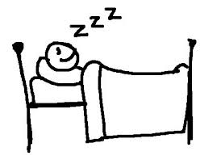

Carlos spent last night staying up on the phone with his grandma. He felt sympathetic and called her due to the fact that her goldfish, Timmy, recently suffered a painful death. Carlos's grandma has been a wreck, and it will be a miracle if she gets through this tragic loss. Carlos himself has taken a hit, but he has chosen to conceal his feelings and put
on a brave face for grandma. Now it's time to wake up and face another day.

Wake up Carlos